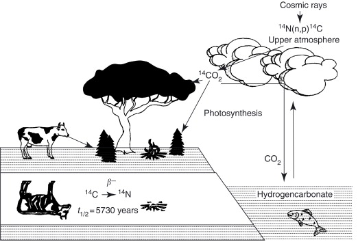
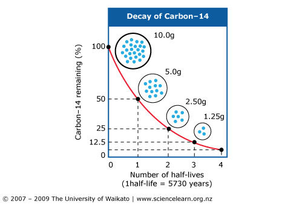
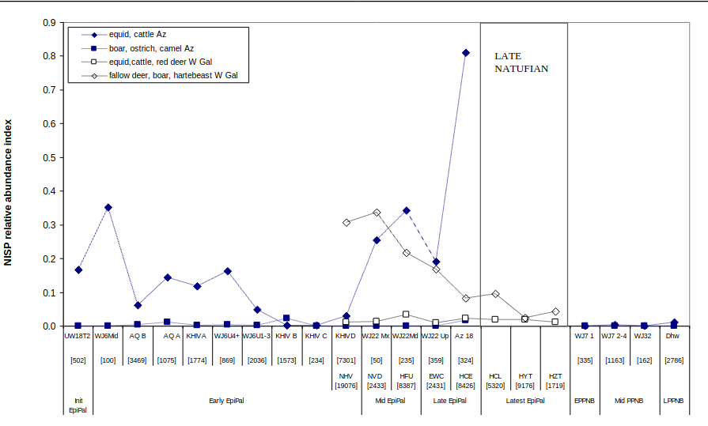
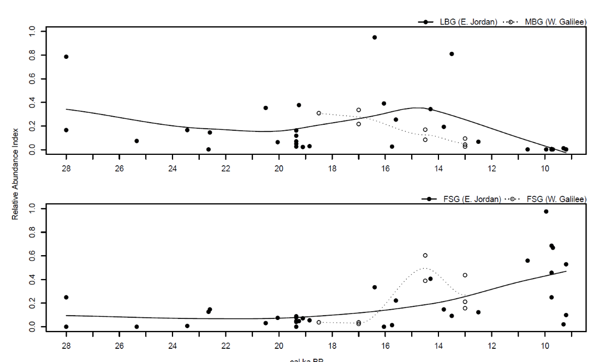
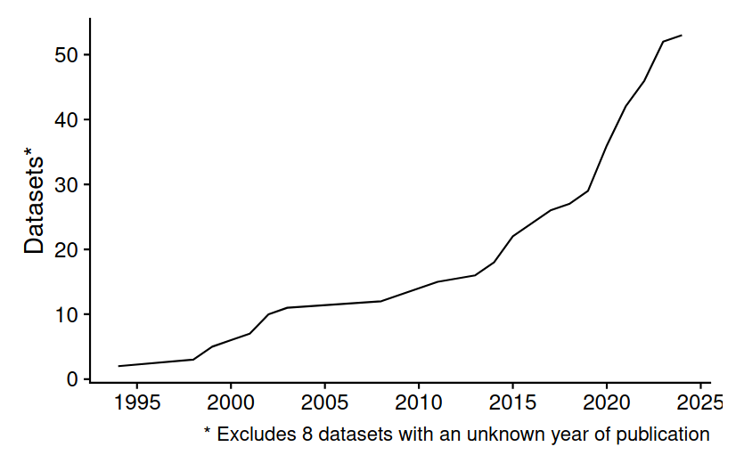
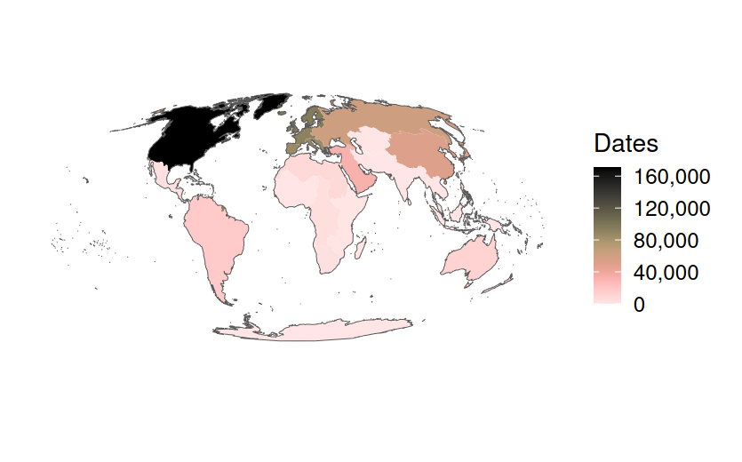

MOSAIC Summer School, Bibracte, 2–6 September 2024
University of Bern
This morning:
This afternoon (practical):


OxA-1234 11200 ± 20 (uncal) BP
Martin Hinz, https://www.martinhinz.info/blog/
Crema (2024, https://doi.org/10.1111/arcm.12984) proposes a new Bayesian alternative.
Radiocarbon & aoristic dates are:


Martin et al. 2017, https://doi.org/10.1016/j.yqres.2016.07.001
Martin et al. in prep.


Roe et al. in prep, ‘XRONOS: an open data infrastructure for archaeological chronology’
c14bazAAR
https://docs.ropensci.org/c14bazAAR/
IntChron
https://intchron.org/
p3k14c
https://www.p3k14c.org/
XRONOS
https://xronos.ch
???
aoristic, aoristAAR, datplot, archSeries, kairos, baorista